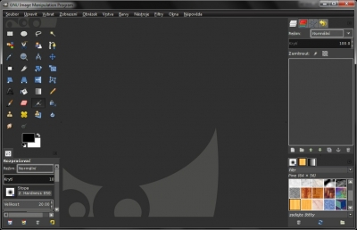

Web je již jen v režimu pro čtení a není možné přidávat nové komentáře nebo dotazy do fóra. Díky za přízeň.
Main menu
You are here
Převlečte si Gimp do jiného kabátu
23. June 2012 - 16:02 — Lukáš
Témata stáhnete na webu http://art.gnome.org/themes/gtk2. Stačí si vybrat a klepnout na odkaz Download.
Mě se líbí téma Tactile. V návodu budeme instalovat toto téma. Po klepnutí na Download se stáhne soubor ve formátu Tactile.tar.gz. S tímto archivem si poradí buď svobodný, zdarma dostupný 7zip, nebo placený WinRAR.
Po rozbalení dostanete složku Tactile, obsahuje soubor index.theme, ten můžeme smazat. Zajímá nás jen složka gtk‑2.0 kterou nakopírujeme do C:\Users\[vaše_uživatelské_jméno]\.gimp 2.8\themes. A přejmenujeme na název tématu, tedy Tactile. Spusťte Gimp, přejděte na Upravit → Předvolby → Témata.
V seznamu vyberte svoje nové téma a klepněte na Budiž. Restartujte Gimp a je hotovo.

{kind=link}
Kategorie:
Web je již ukončen. Nebude zde přibývat žádný nový obsah. Případné dotazy prosím na l.bacovsky(a)outlook.cz
Comments
Re: Převlečte si Gimp do jiného kabátu
Re: Převlečte si Gimp do jiného kabátu
Re: Převlečte si Gimp do jiného kabátu
Re: Převlečte si Gimp do jiného kabátu
Re: Převlečte si Gimp do jiného kabátu
Re: Převlečte si Gimp do jiného kabátu
Add new comment